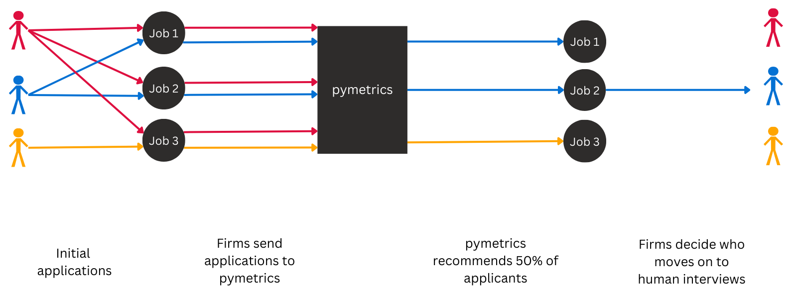
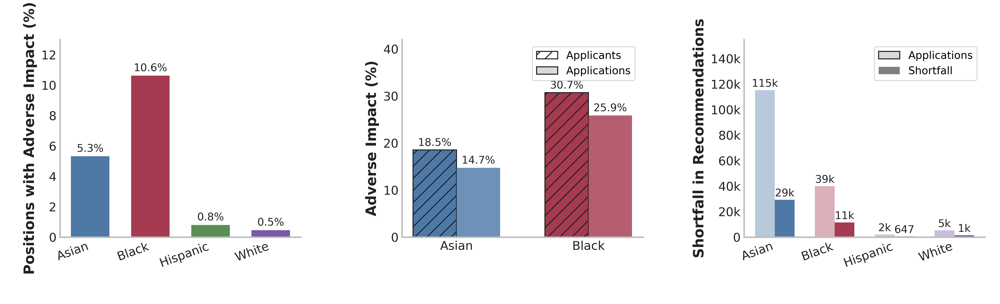
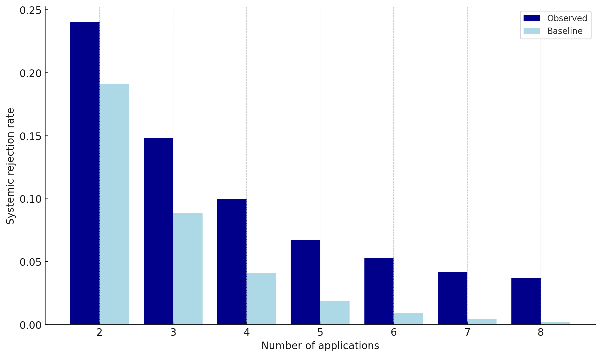
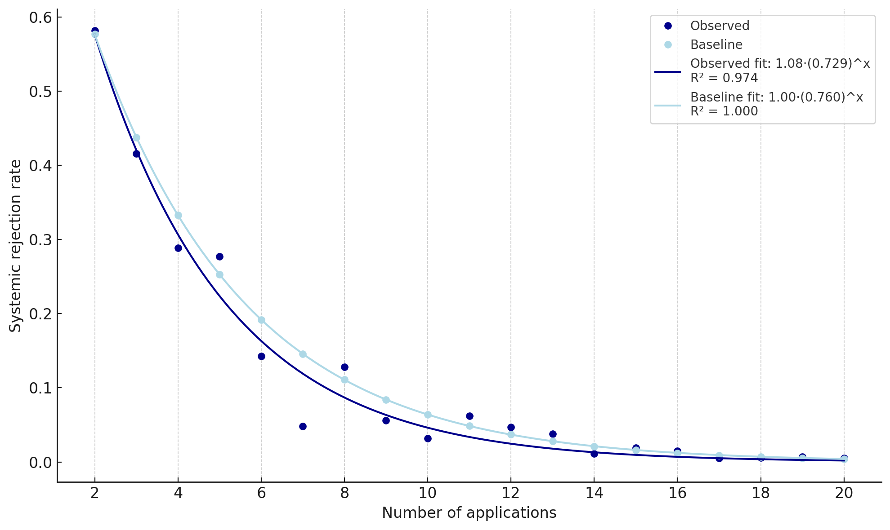
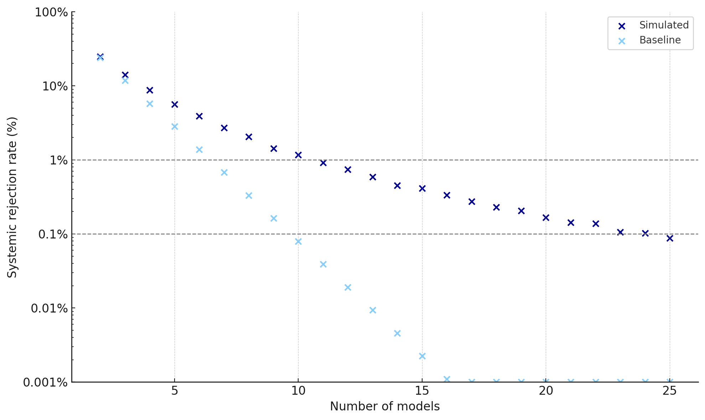

Over 90% of U.S. employers rely on hiring algorithms to screen job applicants. Many different employers use algorithms from the same few vendors. We conduct the largest empirical study of algorithmic hiring with data for 3.4 million real job applicants submitting 4 million applications to 156 employers across 11 market sectors. Every application was assessed by algorithms from a single vendor: we test whether this algorithmic monoculture bottlenecks job opportunities. We are the first to demonstrate large-scale evidence of racial disparities and homogeneous outcomes in high-stakes hiring decisions.
Many employers procure hiring algorithms from the same third-party vendors. Over 60% of the Fortune 100 use HireVue's algorithms. When hiring algorithms from a single vendor mediate hiring decisions at multiple employers, they constitute an algorithmic monoculture.

Title VII of the US Civil Rights Act governs discrimination in hiring. Prior studies found very limited adverse impact in algorithmic hiring data as a whole. We surface previously-overlooked adverse impact by studying positions separately. Black applicants are the most likely to be adversely impacted: 30% of Black applicants apply to at least one position that demonstrates adverse impact against Black applicants. In terms of total effect, Asian applicants experience the largest shortfall: if Asians were selected at the same rate as the most selected racial group for each position, then 29000 additional Asian applications would be recommended.

When applicants apply to multiple positions, they can receive the same outcomes. Algorithmic monoculture could make this most likely. If so, the systemic rejections where applicants are rejected everywhere would be especially concerning. Of applicants that submit 4 applications, 10% are systemically rejected. The observed systemic rejection rate significantly exceeds the baseline rate expected under independent decisions (χ2 = 18,481, p < 0.001).

To contextualize the observed systemic rejection rates, we introduce the baseline of independent decisions (Toups et al., 2023). To test the predictivity of this baseline, we use data from the largest prior study of hiring (Kline et al., 2022), which sent 83,000 applications to 108 Fortune 500 firms. The baseline accurately predicts the observed rates (χ2 = 20.05, p = 0.69). Therefore, excess homogeneity is distinctive of centralized algorithmic assessment.

What would happen if applicants applied more broadly than they did in reality? Would this lessen their chances of systemc rejection? When applicants apply everywhere, we find that at least one model recommends them. But under more realistic behavior, applicants need to submit 25 applications to ensure at least one recommendation with 99.9% probability — compared to just 10 applications for independent decisions.

Hiring AI is governed by employment discrimination law, general AI regulation, and specific rules for algorithmic hiring. In the U.S., Title VII already evaluates adverse impact at the level of specific jobs rather than blended aggregates. More broadly, hiring systems are increasingly treated as high-risk AI, including under the EU AI Act. At the municipal level, New York City Local Law 144 established an early framework for regulating automated employment decision tools, but current guidance does not adequately address the position-level effects we document.
Measure adverse impact per position. Regulators and auditors should evaluate adverse impact ratios at the level of individual positions. Aggregate-only analyses can conceal disparate impact.
Strengthen market surveillance. Federal agencies should quantify the rate of homogeneous outcomes. Without cross-employer links, existing reporting won't capture systemic rejection.
Monitor algorithmic monoculture. Policymakers should surveil shared dependencies in the hiring supply chain. Concentrated reliance on the same systems can yield correlated failures, systemic rejection, and reduced competition in hiring.
Expand researcher access. Legislators should stimulate independent research, including underlying data access, into major hiring platforms. Issues will be difficult to diagnose, let alone rectify, without the foundation of empirically-grounded externally-conducted inquiry.